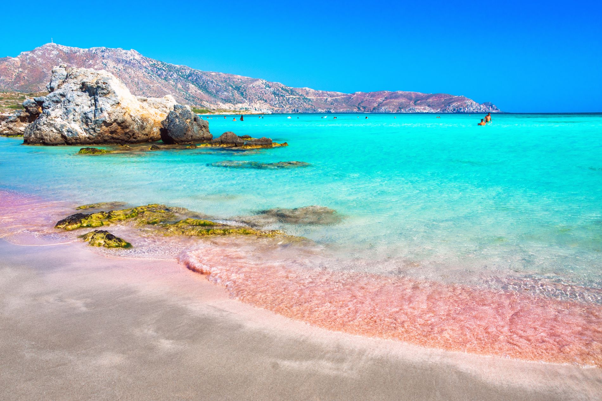
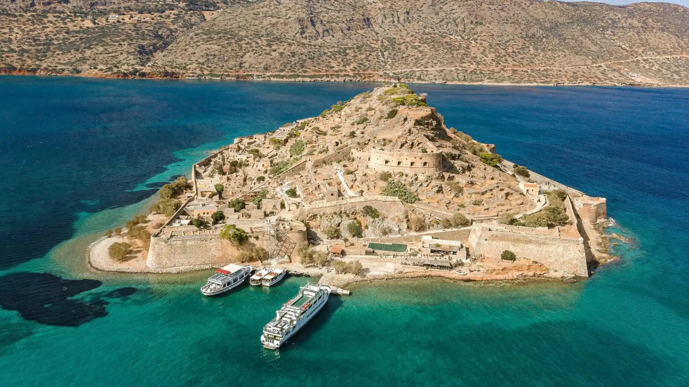

ELAFONISSI BEACH

Experience the famous pink coral sands and shallow lagoons of Crete.
PALACE OF KNOSSOS

"The Charging Bull fresco, a symbol of Minoan power and ritual."
ARKADI MONASTERY

"The 16th-century facade stands as a testament to Cretan resilience."
FORTEZZA OF RETHYMNO

"The star-shaped citadel built by the Venetians in the 16th century."
AQUAWORLD AQUARIUM

"The 360-degree Ocean Tunnel offers a rare glimpse into the sea life."
SPINALONGA ISLAND

"The abandoned village surrounded by the crystal-clear waters of Elounda."